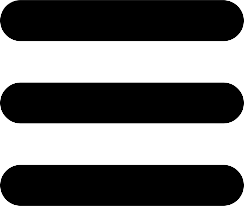

Services Provided by Me
Frontend Developer
I like to code things from scratch, and enjoy bringing ideas to life in the browser. Fast load times and lag free interaction, my highest priority.
UI UX Designer & Animation
Strong preference for easy to use, intuitive UX/UI. Websites don't have to be static, I love making pages come to life. My layouts will work on any device, big or small.
Freelancing
intuitive UX/UI design ,Web Design.HTML,CSS,Javascript,WordPress,Web Programming.